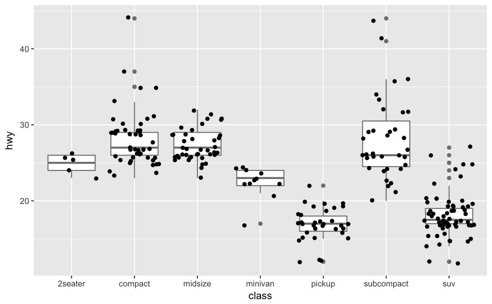
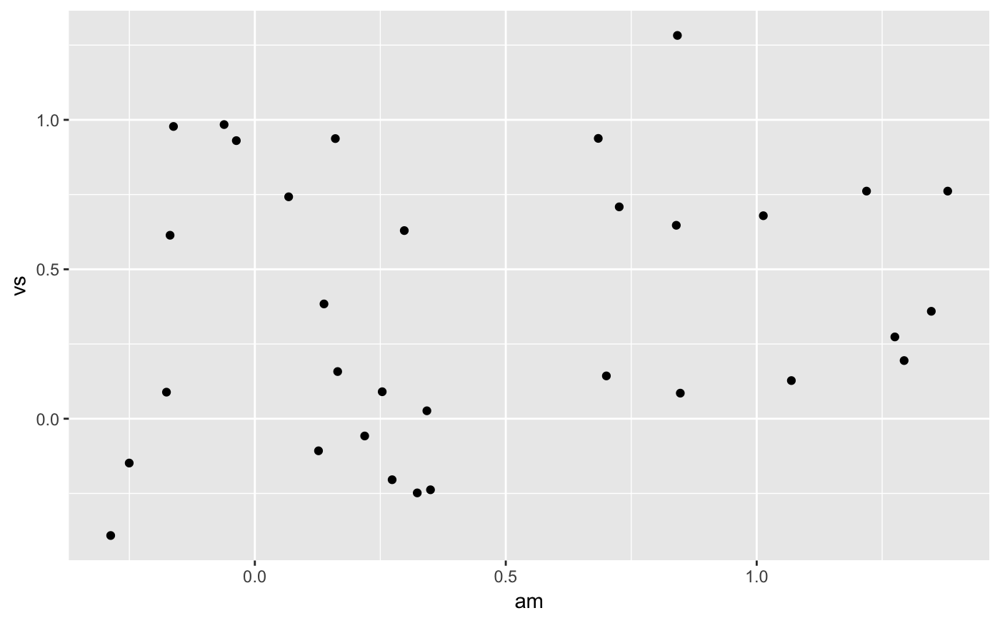
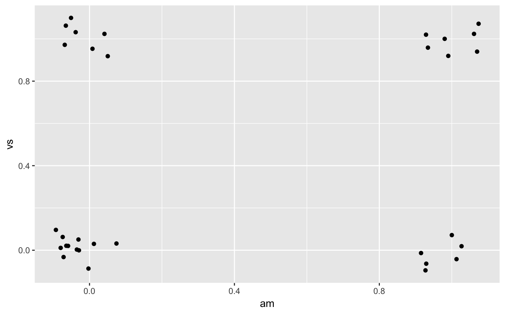
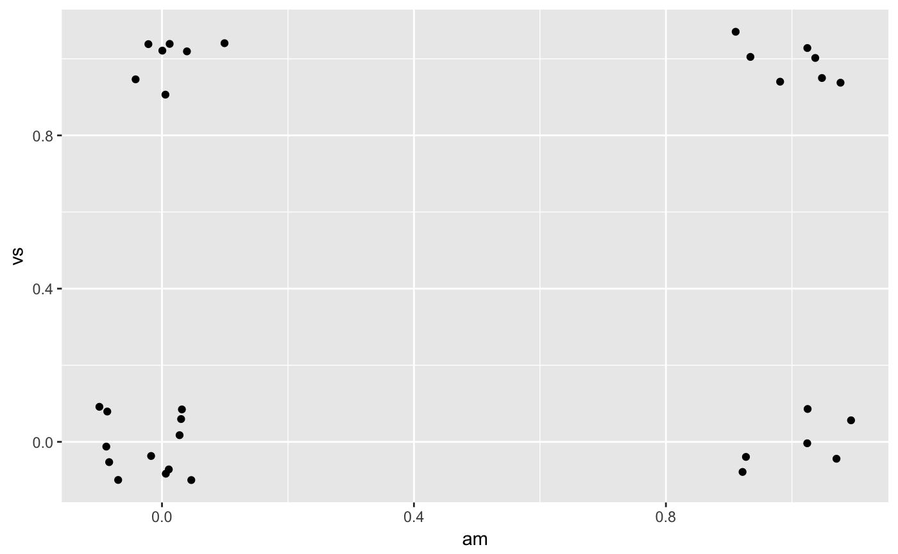
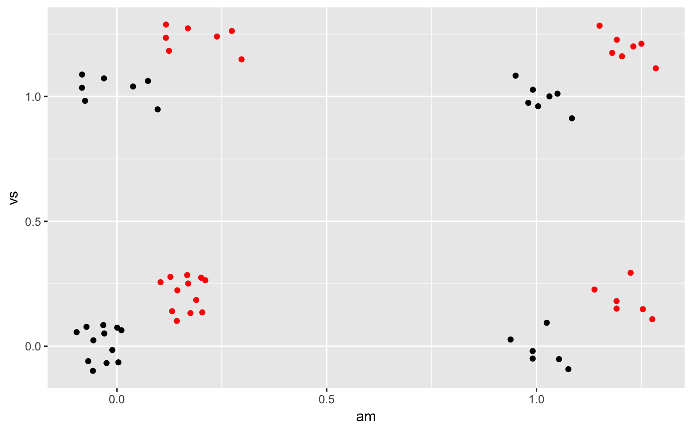

Couterintuitively adding random noise to a plot can sometimes make it easier to read. Jittering is particularly useful for small datasets with at least one discrete position.
position_jitter(width = NULL, height = NULL, seed = NA)
| width, height | Amount of vertical and horizontal jitter. The jitter is added in both positive and negative directions, so the total spread is twice the value specified here. If omitted, defaults to 40% of the resolution of the data: this means the jitter values will occupy 80% of the implied bins. Categorical data is aligned on the integers, so a width or height of 0.5 will spread the data so it's not possible to see the distinction between the categories. |
|---|---|
| seed | A random seed to make the jitter reproducible.
Useful if you need to apply the same jitter twice, e.g., for a point and
a corresponding label.
The random seed is reset after jittering.
If |
Other position adjustments: position_dodge,
position_identity,
position_jitterdodge,
position_nudge,
position_stack
# Jittering is useful when you have a discrete position, and a relatively # small number of points # take up as much space as a boxplot or a bar ggplot(mpg, aes(class, hwy)) + geom_boxplot(colour = "grey50") + geom_jitter()# If the default jittering is too much, as in this plot: ggplot(mtcars, aes(am, vs)) + geom_jitter()# You can adjust it in two ways ggplot(mtcars, aes(am, vs)) + geom_jitter(width = 0.1, height = 0.1)# Create a jitter object for reproducible jitter: jitter <- position_jitter(width = 0.1, height = 0.1) ggplot(mtcars, aes(am, vs)) + geom_point(position = jitter) + geom_point(position = jitter, color = "red", aes(am + 0.2, vs + 0.2))